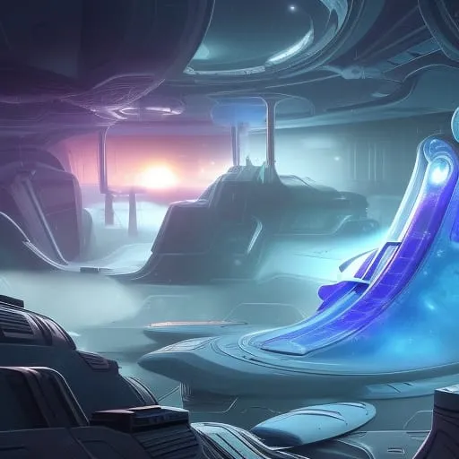

"Niraxus: Nova nada"
Poglavlje 1: Misija
Nebula Explorer, kolonijalni brod izgrađen za smještaj i prijevoz posade od 50 pojedinaca, krenuo je na misiju na udaljenu planetu pod imenom Niraxus. Posada, sastavljena od znanstvenika, inženjera, medicinskog osoblja, posade leta i marinaca, odabrana je po vještinama i stručnosti. Brod je bio opremljen najnovijom tehnologijom i imao je dovoljno potrepština za preživljavanje posade nekoliko godina. Kapetan broda, kapetan Emma Patel, sjedila je u kokpitu, okružena posadom leta, dok su se pripremali za polijetanje. Pored nje je sjedio ko-pilot, poručnik Jackie Johnson, mlada Afroamerikanka koja je podučavana pod kapetanom Patel nekoliko godina. Medicinsko osoblje broda, dr. Khalid Ahmed, sredovječni Palestinski čovjek, sjedio je u ambulantnom delu, prateći vitalne funkcije posade. Glavni inženjer, gospodin Chen, Kinesko-američki čovjek, bio je u strojarnici, osiguravajući da sve funkcionira glatko. Posada također uključuje raznovrsnu skupinu znanstvenika, marinaca i drugih stručnjaka, svi sa svojim jedinstvenim vještinama i stručnošću. Jedan od marinaca, narednik Michael Taylor, robusan i iskusan čovjek u tridesetim godinama, bio je odgovoran za sigurnost broda i sigurnost projekta. Kao najviši časnik marinskog odreda, bio je odgovoran za dobrobit svog vojnika i osiguravanje da su spremni za bilo koju situaciju. Šetao je po brodu, provjeravajući svoje ljude i osiguravajući da su spremni za misiju. Kao što je počeo brojati prema nuli, kapetan Patel se okrenula svojoj posadi i rekla: "Ovo je to, ekipa. Trenirali smo za ovaj trenutak godinama. Znamo rizike i izazove pred nama, ali također znamo potencijalne nagrade. Upravo ćemo napraviti povijest, neka bude dobra". Posada je vrisnula dok su se motori Nebula Explorera upalili, dok je brod polako izlazio iz atmosfere.